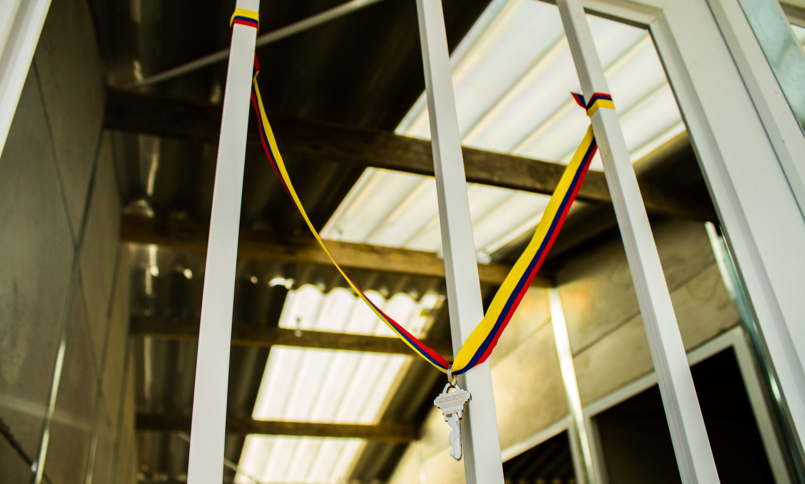

Alejandro Acosta Interactive Media Designer
Audiovisual and Media Communicator from Colombia. Working in Corporate Communications for the last 2 years. Committed with work, responsible and respectful with people.
Volunteer Programs
I enjoy participating and supporting different organizations that work for help people. I have benn volunteering from building houses, supporting public libraries and communities centers.
